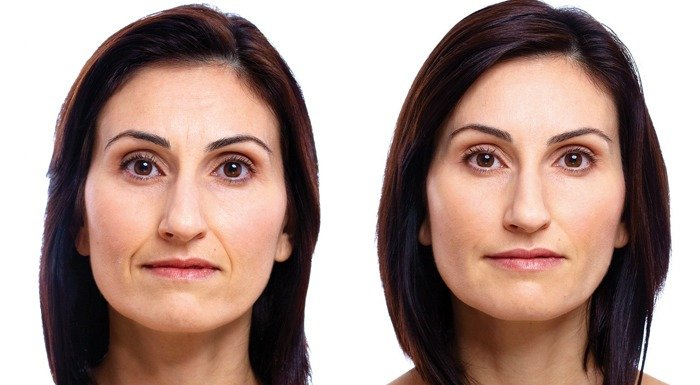

"O Clone" paslaptis atskleista: Jade atskleidė, kaip išsaugoti jaunatviškumą!
Pasirodžius serialui "O Clone", pagrindinė veikėja Jade (Giovanna Antonelli) iš karto tapo žinoma kaip viena gražiausių planetos moterų. Ją pagrįstai vadina grožio etalonu. Būdama tokio amžiaus (38) ji vis dar pirmauja gražiausių pasaulio moterų sąrašuose. Nepaisant to, kad Giovanna yra trijų vaikų motina, ji nuolatos filmuojasi.
 |
Kaip jai pavyksta išsaugoti jaunatvišką išvaizdą? Turbūt manote, kad plastinė chirurgija ir brangios procedūros? Klystate! Šiandien paneigsime šį mitą visiems laikams ir papasakosime, kas iš tiesų padėjo šiai aktorei išlikti kerinčiai.
- Giovanna, šiais metais tapote gražiausia Brazilijos aktore. Nuo "O Clone" laikų nė trupučio nepasikeitėte! Kaip jums pavyko išsaugoti savo grožį?
- Aktorės ir modelio karjera iš tiesių yra pilna streso, skubėjimo ir bemiegių naktų. Patikėkite manimi, jokios priemonės, netgi pačio brangiausios, nepadės jums paslėpti pirmųjų senėjimo ženklų.
Mano darbotvarkė labai įtempta, nuolatos filmuojuosi, dalyvauju interviu ir fotosesijose. Lieka mažai laiko ir jėgų pasirūpinti savimi. Atvirai kalbant, kremai, tonikai, šveitikliai ir kitos odos priežiūros priemonės kelia man baimę. Visus juos panaudoti man reikia mažiausiai valandos! Ir nėra garantijos, kad visos šios priemonės bus veiksmingos.
Laimei, atradau išskirtinį produktą, kuris veikia efektyviau ne visos šios priemonės kartu sudėjus. O rezultatas, kaip matote, atsispindi mano veide!
 |
- Paaiškinkite plačiau.
- Serialą filmuodavome siaubingomis sąlygomis. Dykuma, nepakeliamas karštis, sausas oras. Praleisdavome 13-14 valandų dirbdami. Galite įsivaizduoti, kokia tapo mano oda. Ji buvo nuolat išsausėjusi ir neigiamai paveikta makiažo.
Vos per kelis mėnesius atsirado gilios raukšlės ir pigmentinės dėmės, ir tai nuslėpti pasidarė gan sunki užduotis. Supratau, kad jeigu kažko nesiimsiu, turbūt niekada nesusigrąžinsiu savo grožio. .
Susidomėjau vietos žmonių receptais, daug kalbėjau su vietiniais. Jie neturėjo tiek daug kosmetikos kaip vakarų šalys, bet moterys atrodė itin jaunatviškai, netgi perkopusios 50 metų ribą .
Pasirodo, natūrali kosmetika čia yra labai populiari. Žinoma, šiais laikais niekas namuose nesigamina žolelių užpilų, bet rinkdamosi odos priežiūros produktus moterys pirmiausia žiūri į sudėtį. Vienas populiariausių produktų yra Goji Cream . Jo sudėtyje yra vien natūralūs ingredientai, nėra jokių chemikalų.
- Kaip veikia Goji Cream?
- Jį reikia tepti ant nuvalyto veido kaip ir bet kurį kitą kremą sukamaisiais rankos judesiais. Jis greit įsigeria, nelimpa ir neužkemša porų. Šis kremas taip gerai maitina ir tonizuoja odą, kad nereikia naudoti jokių kitų priežiūros produktų .
Naudingi komponentai prasiskverbia į odos ląsteles, prisotindami jas deguonimi ir kolagenu. Tai suaktyvina ląstelių veiklą, oda pradeda atsigauti iš vidaus, nyksta patamsėjimai, maišeliai po akimis ir kiti senėjimo požymiai.
Poveikis matomas beveik po pirmo naudojimo - oda tampa skaisti ir sudrėkinta, spalva pasidaro tolygesnė . Šis poveikis tęsiasi 24 valandas ir jeigu tepsite kremą kasdien, poveikis taps dar stipresnis ir pokyčiai odoje suintensyvės - raukšlės išnyks, oda taps dar labiau elastinga.
Kai pradėjau naudoti Goji Cream , netikėjau, kad jis bus sėkmingas ir duos rezultatų. Bet paskui pradėjau ieškoti daugiau informacijos apie šį kremą ir radau mokslinį straipsnį , kuriame viskas buvo išsamiai paaiškinta. Neliko nė lašo abejonės. Jau po pirmo naudojimo mano oda vėl pradėjo švytėti! Sausumo nebeliko, raukšlės išsilygino.
Mano visažistė iš karto pastebėjo pokyčius, makiažas lengviau padengė mano odą ir tiesiog nuostabiai atrodė. Šis kremas tapo tikru gelbėtoju! Nuo to laiko reguliariai jį naudoju ir nekeisiu į nieką kitą! Goji Cream padeda man išsaugoti grožį ir jaunystę , nebenaudoju jokios kitos kosmetikos.
- Manau, kad daug moterų pasinaudos mano patarimu.
Goji Cream rekomenduoju visoms, kurios trokšta kuo ilgiau išlaikyti savo odos grožį ir jaunystę. Dar neseniai buvo tiek mažai apie tai žinančių žmonių, o dabar jis yra tikras stebuklas! Pamenu laikus, kai turėjau prašyti savo draugų iš užsienio jį užsakyti.
Bet dabar Goji Cream tampa vis populiaresnis visame pasaulyje ir galima lengvai jį įsigyti internetu iš oficialios gamintojos svetainės savo šalyje . Išlik laiminga ir graži!

EITI Į PUSLAPĮ